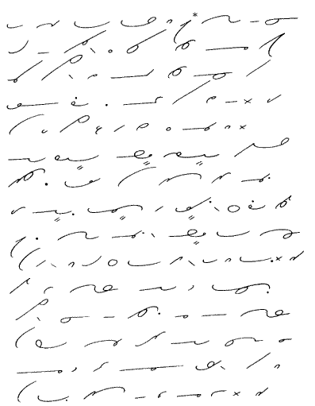

Unit
3
26.
By blending d and t into one long stroke
the syllables ted, ded, and det are expressed:
Note: The combination det usually
occurs at the beginning of words, as in detect, detach,
while ted or ded usually occurs at the end of
a word.
27.
By blending m and n into one long stroke
the syllables men, mem are expressed. In
addition to men, mem this blend represents similar
sounds, such as min in minute, mun in
money:
28. Frequent-Word
Drill
29. Brief
Forms for Common Words
Note: W is omitted in
the word were, and wh in where, when,
what; other is expressed by uth; all,
by aw placed on its side; time, by the tem
blend; into, by blending in and to. For
convenience, the long i in my is expressed by
a large circle.
General Phrasing Principles
30.
The following suggestions will be helpful to an understanding
of the general principles of phrasing:
- Short and common words only should be joined, as of the,
in the, etc.
- The words should make good sense if standing alone, as it
will be.
- Pronouns generally are joined to the words they precede, as
I can, you are, you can, I would.
- A qualifying word is usually joined to the word it qualifies,
as good man.
- The words to, of, in, with,
and generally are joined to the word following, as
to the, of which, in that, with
that, and will.
- Words that do not make an easily written, distinctive joining
should not be phrased.
31. Phrase
Drill. The simple phrases given in the drill below
are of very high frequency and will serve as models for other phrases:
32. Reading
and Dictation Practice

*Before a downstroke, to is expressed by
t.
33. Writing
Practice
- You will need a keen memory when you go to the market today.
- When you take the grain to the mill you can get your money.
- Many of our men will go to the train in the rain to greet the
team.
- I am not any more eager to be in debt to you than you are.
- I am ready to go the limit in getting you the money you need.
- He had a great desire to read, but he had little time and his
reading was limited.
- I am not willing to go by train, but you can make me a minimum
rate by air and rail.
- The data you need will be ready by the middle of the month.
- The mill was then making a good metal tag at the rate of eighty
a minute.
- In his dream he was being attacked in the dark by an enemy.
Dear
Sir: I am eager to eliminate without any more delay the error
made in the minimum drain rate to Erie. I can meet you at
Erie any day you desire. My time is limited and I cannot be
there more than a day. It would be well to get all the data
in hand by the time you are ready to do. I will meet you any
day you can be there. Yours truly,
Brief Form Drill for this Unit
Transcription Key to
this Unit
- Next Unit - |